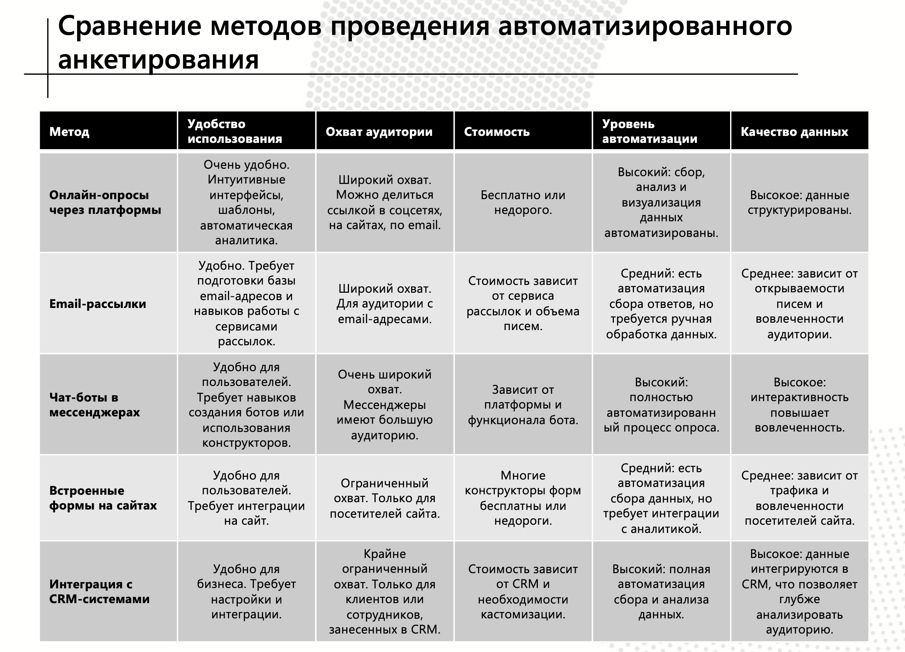

Журнал работы над проектом
Подготовка данных
🔎 Анализ
Первым шагом стал анализ существующих систем создания анкет и методов их проведения. На основе полученных данных были созданы сравнительные таблицы, чтобы выбрать наиболее эффективные подходы.
🧩 Разделение обязанностей
Команда была разделена на 4 группы для выполнения ключевых задач проекта:
- Дизайн интерфейса
- Архитектура баз данных
- Создание анкет
- Тестирование
🚀 Начало работы
После распределения ролей каждая команда приступила к выполнению своих задач:
🎨 Дизайн интерфейса
Команда дизайнеров разработала прототипы экранов приложения, включая:
- Страницы входа
- Проведение тестирования
- Управление группами
🧪 Тестирование
Тестировщики разработали план проверки функционала системы анкетирования, включая:
- Проверка корректности ввода данных
- Тестирование сохранения результатов
- Анализ производительности
🗂 Проектирование базы данных
Команда архитекторов создала UML-диаграмму базы данных для хранения ключевых сущностей:

📝 Создание анкет
Разработчики анкет подготовили начальный набор вопросов и разработали XML-шаблоны для генерации анкет:
- Генерация структуры вопросов
- Организация данных для удобной обработки
📋 Документация и подготовка к тестированию
Команда документаторов завершила создание HTML-страниц и подготовила подробное руководство для остальных участников проекта.
🛠️ Тестирование: проверка генерации анкет
Проведены тесты скриптов для генерации анкет, включая проверку:
- Корректности структуры XML-файлов
- Обработки различных типов данных
- Работы шаблонов вопросов
🗂 Архитектура: финализация и документация
Подготовлена финальная документация по структуре базы данных, включая описание сущностей и их атрибутов.
📝 Генерация анкет: тестовая версия и инструкция
Разработчики модуля генерации анкет подготовили рабочую версию программы и краткую инструкцию по использованию:
- Создание вопросов
- Настройка шаблонов
- Сохранение результатов